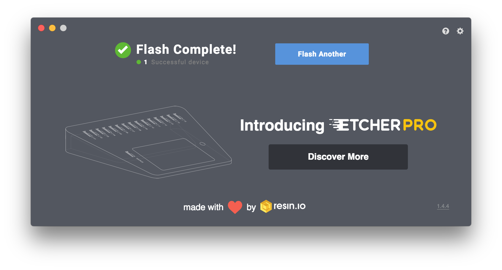
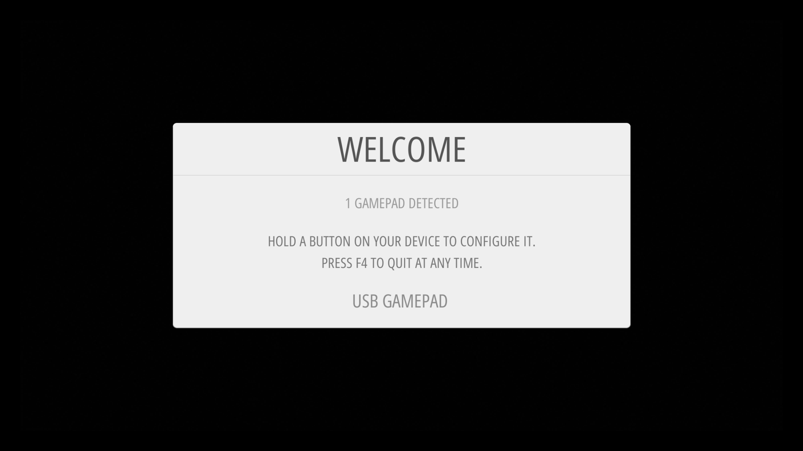

Retro Gaming with Raspberry Pi
The Video Game Crash
1983
Nostalgia
Old Hardware

Re-releases
New Old Hardware
Pre-loaded Games

Expensive
Software Simulation
Emulator
Terminal Emulator
Video Game
Console Emulator
Nintendo Virtual Console
XBox 360
Backwards Compatibility
PlayStation Store
Consoles on Computers
Emulator Frontends
Emulator Annoyances
Controllers
For Computer Experts
Nostalgia Availability
Nostalgic Discrimination
Raspberry Pi
A Gift
Beyond my Expectations
5th-generation
Legality
This is Not Legal Advice
Emulators are Legal
Sega v. Accolade (1992)
Reverse Engineering is Legal
Sony Computer Entertainment, Inc. v. Connectix Corporation (2000)
Copying Firmware is Legal
Sony Computer Entertainment America v. Bleem (2000)
Emulators are legal
Games are Copyrighted
Downloading ROMs is Illegal
Archival Copying May Be Legal
Clear about Legality?
Raspberry Pi

Raspberry Pi Model 1 A
- MicroUSB power
- HDMI video/audio
- 3.5mm audio output
- MicroSD card
- USB-A ports
- GPIO Pins

- 4-core 1.4 GHz ARM
- 1GB SDRAM
- Bluetooth
- 802.11ac WiFi
- GigE Ethernet
Raspberry Pi Zero

Buying A Pi
You Will Need
Raspberry Pi Model 3B+
5.1V, 3A MicroUSB Power
64 GB MicroSD card
HDMI Cable (6ft)
Official Raspberry Pi Case
You Will Also Need
- An HDMI display (TV)
- MicroSD card reader ($15)
- USB keyboard ($8)
Controllers
iNNext Super NES Controller
DualShock 4

Nintendo Pro Controller
XBox Controllers
Not All Bluetooth
Total Price
- Raspberry Pi Model 3B+
- 5.1V, 3A MicroUSB power adapter
- 64GB MicroSD card
- HDMI cable (6ft)
- Official RPi case
- iNNext Super NES Controllers
- Total
- $35
- $11
- $20
- $15
- $9
- $13
- $103
Assembling
Official Case
Insert the Pi
Close the sides
Software
- Operating System
- Emulators
- Front-end
RetroPie

Disk Image
- Raspbian
- Emulators (libretro)
- EmulationStation
Download RetroPie
Writing Images
Etcher
Choose an Image
Select a Disk
Flash and Wait
Wait More
Done!

Plug in
Keyboard
Controller
HDMI
Power
Boot Screen
Expand Filesystem
EmulationStation
Controller Setup

Controller Setup
Not Enough Buttons
The Hotkey
EmulationStation

Adding Games
Configure Wireless
Configure Country
raspi-config
raspi-config
Localization Settings
Wi-Fi Country
Configure Wifi
Configure Wifi
Configure Wifi
Configure Wifi
Transfer Games
Samba
Connect to Server

Credentials

Shares
ROMs Folder
SNES Folder
Restart EmulationStation
Restart EmulationStation
Our New System
Our Game
USB
retropie Directory
Magic
ROMs Folder
SNES Folder
Return to RetroPie
Restart EmulationStation
Our New Game
Metadata
Scraper
Scrape Now
What to Scrape
Scraping
Hotkeys
Quit: Hotkey + Start
Restart: Hotkey + B
Save state: Hotkey + R
Load state: Hotkey + L
Menu: Hotkey + X
Customizing
Themes
ES Themes
UI Settings
Theme Package
Customized Theme
Custom Cases
SNES Case
Power Switch
Heat Sink
Kodi Media Center